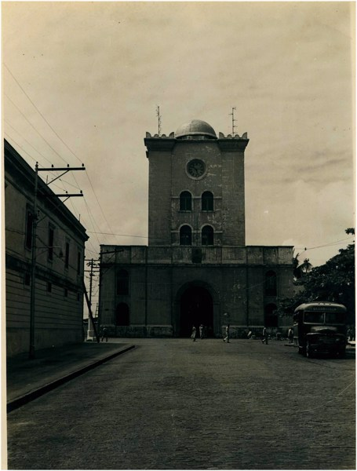
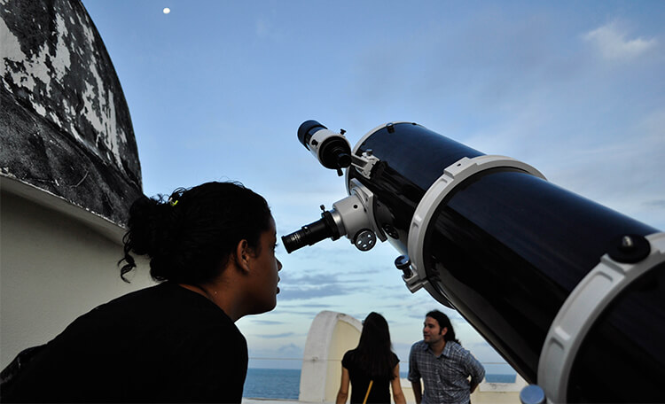
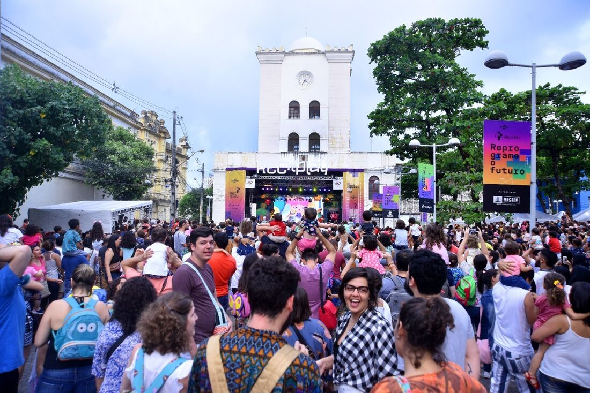

Torre Malakoff: Um Ícone Cultural em Recife

Localizada nas proximidades do Marco Zero, a Torre Malakoff é um dos pontos turísticos mais emblemáticos de Recife, Pernambuco. Esta estrutura imponente, que remonta ao século XIX, é muito mais do que apenas um marco arquitetônico; é um centro cultural vibrante que atrai visitantes de todas as partes do mundo.
História e Arquitetura
Construída em 1855 como um observatório astronômico, a Torre Malakoff recebeu esse nome em homenagem à fortaleza russa de Malakhov, que desempenhou um papel crucial durante a Guerra da Crimeia. A torre foi projetada pelo engenheiro militar francês Louis Léger Vauthier e é uma obra-prima da arquitetura neoclássica.
Uso Contemporâneo
Hoje em dia, a Torre Malakoff abriga um centro cultural dinâmico que promove a arte, a cultura e a educação. Com exposições temporárias de artistas locais e internacionais, eventos culturais, palestras, concertos e muito mais, a torre é um local de encontro para pessoas interessadas em explorar a diversidade cultural de Recife.
Vista Panorâmica
Além de suas atividades culturais, a Torre Malakoff oferece vistas panorâmicas deslumbrantes da cidade de Recife e do rio Capibaribe. Subir ao topo da torre é uma experiência única que permite aos visitantes apreciar a beleza da paisagem urbana de Recife, incluindo seus edifícios históricos, pontes e o movimentado porto.
Eventos e atividades
Ao longo do ano, a Torre Malakoff é palco de uma variedade de eventos e atividades que atraem tanto moradores quanto turistas. Desde exposições de arte e performances musicais até feiras culturais e festivais temáticos, há sempre algo emocionante acontecendo na torre.
Um tesouro cultural
Para os amantes da arte, da história e da cultura, a Torre Malakoff é verdadeiramente um tesouro a ser explorado em Recife. Sua combinação única de história, arquitetura e atividades contemporâneas faz dela um destino imperdível para aqueles que desejam mergulhar na rica herança cultural de Pernambuco.